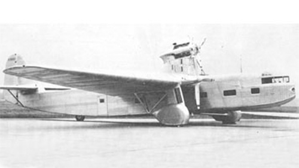

14-A

- Разработчик: Ford
- Страна: США
- Первый полет:
- Тип: Транспортный самолет
Последним самолетом компании Ford Motor Company стал Ford 14-A. Этот самолет был получен в результате переделки проекта четырехдвигательного Ford 10-AT.
Новый фюзеляж позволял разместить до 40 пассажиров в комфортом класса Pullman. Силовая установка воздушного судна состояла из трех шестицилиндровых двигателей Hispano-Suiza 18 Sbr мощностью 1000 л.с. (750 кВт).
Единственный экземпляр Ford 14-A (NX9660) был изготовлен в феврале 1932 году. В течении года машина выполняла только рулежки по аэродрому и ни разу не поднялась в воздух. Не взлетевший ни разу самолет был разрезан на метал в следующем году.
| Летно технические характеристики | |
|---|---|
| Модификация | 14-A |
| Размах крыла максимальный, м | 33.50 |
| Длина, м | 26.40 |
| Высота, м | |
| Площадь крыла, м2 | |
| Масса, кг | |
| - пустого самолета | |
| - нормальная взлетная | |
| Тип двигателя | 3 ПД Hispano-Suiza 18 Sbr |
| Мощность, л.с. | 3 х 1000 |
| Максимальная скорость у земли, км/ч | |
| Практическая дальность, км | |
| Практический потолок, м | |
| Экипаж, чел | 2 |
| Полезная нагрузка: | 40 пассажиров |